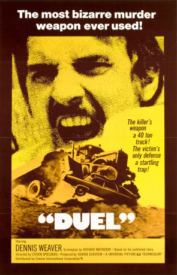

#744 Duell
Alternativ: Duel
 
 IMDB-Wertung: 7.7 / 10
IMDB-Wertung: 7.7 / 10  Metascore: 0
Metascore: 0 
Der Vertreter David Mann fährt auf einer öden Landstrasse durch die Wüste, als plötzlich ein Tanklastzug ohne ersichtlichen Grund Jagd auf ihn macht. Steven Spielberg produzierte seinen Debütfilm in nur dreizehn Tagen. Der ursprünglich für das Fernsehen entwickelte Film lief aufgrund seines Erfolges in einer längeren Fassung in die europäischen Kinos.
Jahr: 1971
Dauer: 90 Minuten
FSK: 12
Land: USA Studio: ABCTonspuren: DTS - ,
Untertitel: Deutsch,
Auflösung: 1080p (1920x1040) Größe: 6717 MB
Genre: Action, Horror, Thriller
Regisseur:  Steven Spielberg
Steven Spielberg
Drehbuch: Richard Matheson, Richard Matheson
Soundtrack: Billy Goldenberg
Darsteller:
 Dennis Weaver als David Mann
Dennis Weaver als David Mann- Jacqueline Scott als Mrs. Mann
- Eddie Firestone als Cafe Owner
- Lou Frizzell als Bus Driver
- Gene Dynarski als Man in Cafe
- Lucille Benson als Lady at Snakerama
- Tim Herbert als Gas Station Attendant
- Charles Seel als Old Man
- Shirley O'Hara als Waitress
- Alexander Lockwood als Old Man in Car
- Amy Douglass als Old Woman in Car
- Dick Whittington als Radio Interviewer
 Carey Loftin als The Truck Driver
Carey Loftin als The Truck Driver Dale Van Sickel als Car Driver
Dale Van Sickel als Car Driver- Shawn Steinman als Girl on school bus , uncredited
Datei: X:\1971\Duell (1971, FSK12, 1920x1040).mkv seit 17.03.2015
Festplatte: HD 1971-1979
 Es gibt insgesamt 28 Filme in der Gruppe '1971'
Es gibt insgesamt 28 Filme in der Gruppe '1971'